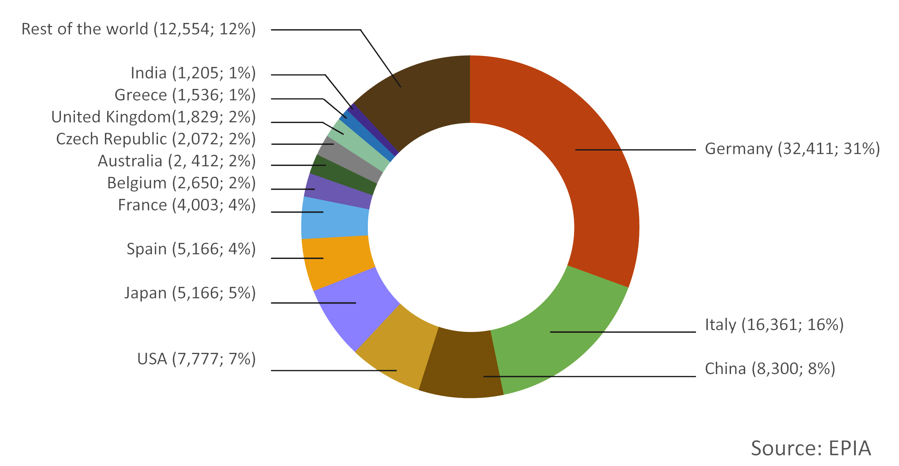
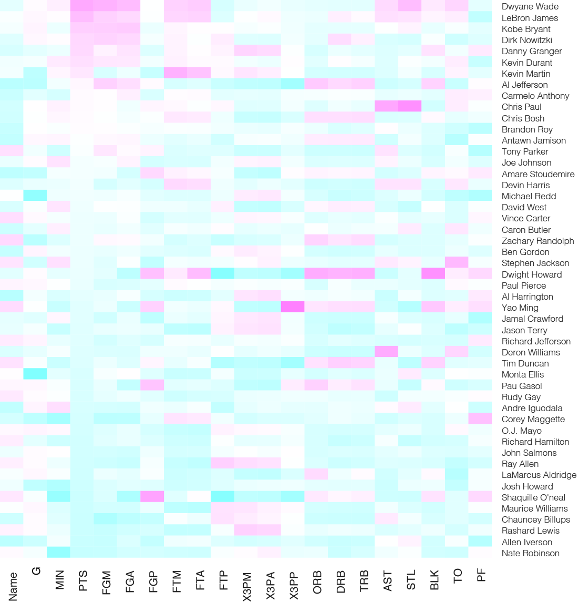

一、饼图+
这次让我们试PPT中经常出现的饼图。
饼图一般用来展示各部分在总体中所占的百分比，适用于数据不多的情况。虽然饼图大家用的非常多，但通常是从EXCEL中直接生成，用好的并不常见，因为大家容易忽视几个问题：
饼图的中心点区域线和颜色过于集中，不利于视觉舒适。
EXCEL默认的饼图配色大家见的太多后容易审美疲劳。我们可以用一种饼图的变体来解决一下上面的问题，“面包圈”图闪亮登场。

资料来源：TU DelftX
我们可以看到，面包圈图比饼图可以放相对更多的数据而不会在中心产生过度集中现象，没有了中心集中，也有利于颜色的搭配。这种图制作也非常简单，在原来的饼图中间画个白色的圆形就行了：）
二、HeatMap
有时候数据指标比较多的情况下，很难用简单的图表来表达，这时候可以试试HeatMap，可以在二维平面上展示矩阵形式的数据。在这个例子里我们还是用到了NBA数据，简单说就是展示了不同球员的各项指标，于之前文章中提到的“脸图”不同，这种展示方式数据更加直观。在本例中洋红到浅蓝表示数据值由高到低。

bball <- read.csv("http://datasets.flowingdata.com/ppg2008.csv", header = TRUE)
bball <- bball[order(bball$PTS, decreasing = FALSE),] #按得分PTS 降序排列数据
row.names(bball) <- bball$Name
ball <- bball[, 2:20]
bball_matrix <- data.matrix(bball) #数据必须转成矩阵型
bball_heatmap <- heatmap(bball_matrix, Rowv=NA, Colv = NA,
col = cm.colors(256), scale="column", margins = c(5,10)) #cm.colors(256)表示从洋红到蓝（cm是cmyk里的两个词）
注：代码及数据来源
断断续续写到第三篇笔记了，想列了提纲，看看以后可以写点啥，也欢迎大家多多补充。
- 0、用到的软件的最基本介绍
- 1、动态数据表达（1，2）
- 2、数据收集方式
- 3、数据整理方式及工具（1，2）
- 4、与地理信息相关的图形表达（1，2，3）